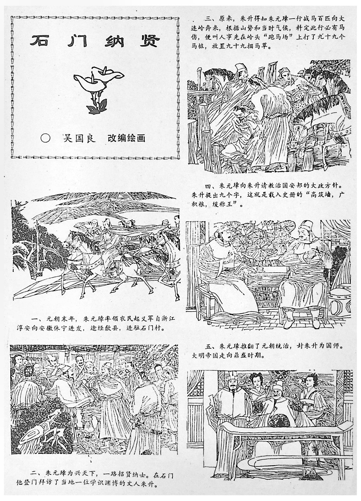

吴国良改编、绘画 《人事》1988年第8期（总第35期），封三
石门纳贤
Recruiting a Worthy at Shimen
- Panel text
- 一、元朝末年，朱元璋率领农民起义军自浙江淳安向安徽休宁进发，途经歙县，进驻石门村。
1. At the end of the Yuan dynasty, Zhu Yuanzhang led his peasant rebel army from Chun'an in Zhejiang toward Xiuning in Anhui; passing through She county, he camped at Shimen village. - 二、朱元璋为兴天下，一路招贤纳士。在石门他登门拜访了当地一位学识渊博的文人朱升。
2. To win the empire, Zhu Yuanzhang recruited worthy men all along the way. At Shimen he called in person on Zhu Sheng, a learned local scholar. - 三、原来，朱升得知朱元璋一行战马百匹向大连岭奔来，根据山势和当时气候，料定此行必有马伤，便叫人事先在岭头“跑马场”上打了九十九个马桩，放置九十九捆马草。
3. Zhu Sheng had learned that Zhu Yuanzhang's party with a hundred war horses was racing toward Dalian Ridge. Judging from the terrain and the weather that a horse was sure to be lost on the way, he had people drive ninety-nine hitching posts into the “horse ground” at the top of the ridge and lay out ninety-nine bundles of fodder in advance. - 四、朱元璋向朱升请教治国安邦的大政方针。朱升提出九个字，这就是载入史册的“高筑墙，广积粮，缓称王”。
4. Zhu Yuanzhang asked Zhu Sheng for a grand strategy for governing and securing the state. Zhu Sheng offered nine characters, recorded in the histories: “Build high walls, store up grain widely, be slow to proclaim yourself king.” - 五、朱元璋推翻了元朝统治，封朱升为国师。大明帝国走向鼎盛时期。
5. Zhu Yuanzhang overthrew the Yuan and made Zhu Sheng preceptor of the state. The Ming empire entered its golden age.
- 一、元朝末年，朱元璋率领农民起义军自浙江淳安向安徽休宁进发，途经歙县，进驻石门村。
- Description
- Five-panel picture story: at the end of the Yuan dynasty Zhu Yuanzhang, on campaign, calls on the scholar Zhu Sheng at Shimen village, who has foreseen his arrival; Zhu Sheng gives him the nine-character strategy that helps him found the Ming.
- Note
- Zhu Sheng's advice — 高筑墙，广积粮，缓称王, “build high walls, store up grain, be slow to proclaim yourself king” — is famous; Mao Zedong adapted it in 1972 as “dig tunnels deep, store grain everywhere, never seek hegemony.”
- Artist
- Wu Guoliang 吴国良 (adapted and drawn)
- Published in
- 《人事》1988年第8期（总第35期）, inside back cover
- Themes
- Talent and its neglect · Exemplary history · Picture stories (连环画)

Cite
Wu Guoliang, “石门纳贤” [Recruiting a Worthy at Shimen], Renshi (Personnel) 《人事》, 1988, no. 8, inside back cover.